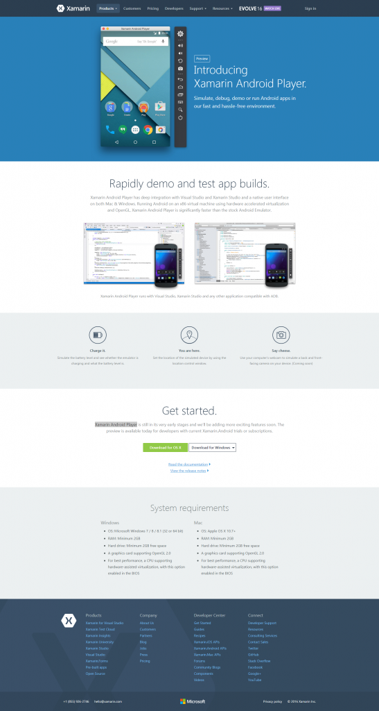
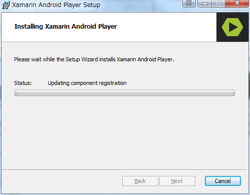

前回はAndroid Emulatorが表示されないことがある問題を解決しました。
Problem
が、Emulatorが動かないときがあります。
Emulatorは起動するけど、いつまでたってもデプロイしたアプリが表示されず、ずっとロック画面とか。
前回も最後に話しましたが、Xamarin.AndroidのデバッグはXamarin Android Playerなるものでやるのが良いらしいです。
Resolution
Simulate Android apps with the Xamarin Android Player - XamarinからWindows用のインストーラをダウンロードして起動します。
画面の中央やや下です。

{kind=link}
インストーラの入手
Xamarin Android Player Installation - Xamarinによれば、Hyper-Vを無効化しないと最大のパフォーマンスを得られない、と記述があります。
まぁWindows7にインストールするので別に私は構いません。
ダウンロードしたインストーラを起動してインストールを始めます。
{kind=link}
セットアップ画面
{kind=link}
セットアップ開始
{kind=link}
VirtualBoxのセットアップ
{kind=link}
VirtualBoxのインストール先
{kind=link}
VirtualBoxのインストールオプション
赤字の警告。何かファイルをダウンロードしていたりするなら、それが終わるのを待ちましょう。
{kind=link}
インストール中、ネットワーク接続が一時的に切れる、という警告
{kind=link}
Are you ready?
{kind=link}
VirtualBoxインストール中
デバイスドライバのインストール。
Oracleを信用して、許可してあげましょう。常に許可するかどうかは任意です。
{kind=link}
デバイスドライバのインストール許可1
{kind=link}
デバイスドライバのインストール許可2
{kind=link}
VirtualBoxインストール完了
{kind=link}
デバイスドライバのインストール許可3
{kind=link}
Xamarin Android Playerのセットアップ
{kind=link}
Xamarin Android Playerのライセンス許諾
{kind=link}
Xamarin Android Playerのインストールオプション
{kind=link}
覚悟はいいか？
開始。

{kind=link}
Xamarin Android Playerのインストール中
{kind=link}
Xamarin Android Playerのインストール終了
全部完了 
完全終了
{kind=link}
え？
(ﾟДﾟ)ﾊｧ?
本当に意味不明。いやいや、今インストールしたでしょ？ というわけでGoogle先生。
同じ現象の人、いました。
After fresh install on Windows 10, it says “Unable to find Virtualbox” 曰く、環境変数 VBOX_MSI_INSTALL_PATHの末尾にバックスラッシュがあるとダメだよ、とのこと。
環境変数変更後、再起動。
無事に起動しました。
{kind=link}
対応するエミュレーター一覧
{kind=link}
デバイス名を指定
{kind=link}
デバイスの詳細
とりあえず、全部ダウンロードして、Visual Studioを開き、Androidプロジェクトをスタートアップに選択。デバイス一覧を見ると、
{kind=link}
増えてる！
正確には、Xamarin Android Playerがインストールされて、既存のエミュレータと置き換わった、という感じです。
試しに、前回さんざんな目に遭ったAPI23である、**Nexus 7 (Marshmallow) (Android 6.0 - API 23)**を試してみます。
{kind=link}
お？
特にXamarin Android Playerから予め起動しておく必要は無い模様。
{kind=link}
また待機しますか….
{kind=link}
きれいな壁紙
でも、また反応がない。
って、デバッグが切れてる(#^ω^)ﾋﾞｷﾋﾞｷ でも、再度デバッグしても、うんともすんとも言わない。Visual Studioのステータスバーはオレンジ色なのでデバッグは維持されています。
何気なく、エミュレーターのロック画面を上にスワイプしてみると。
{kind=link}
デバッグ開始
きたー。
ちょっと画面の解像度が高すぎて？文字が小さいけど、まぁいいでしょう。
でも、最大化すると画面が真っ暗になります。
ちょっとまだ不安定な感じはします。
Conclusion
少なくとも、初期状態よりは大分良くなった気がします。
けれど、まだまだ改善の余地があると思います。
私のWindowsとの相性が悪いのかも入れませんが…